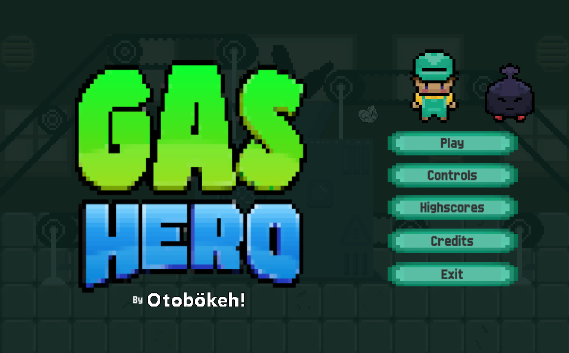
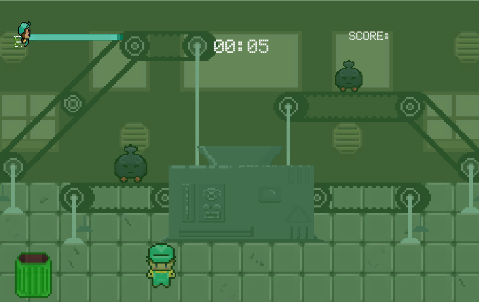
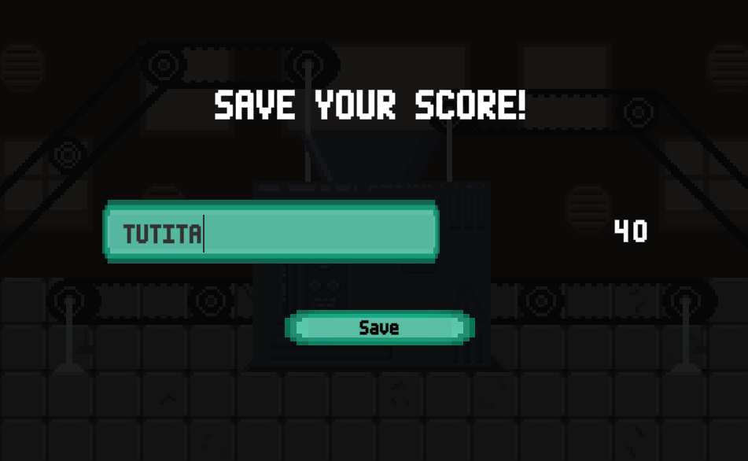
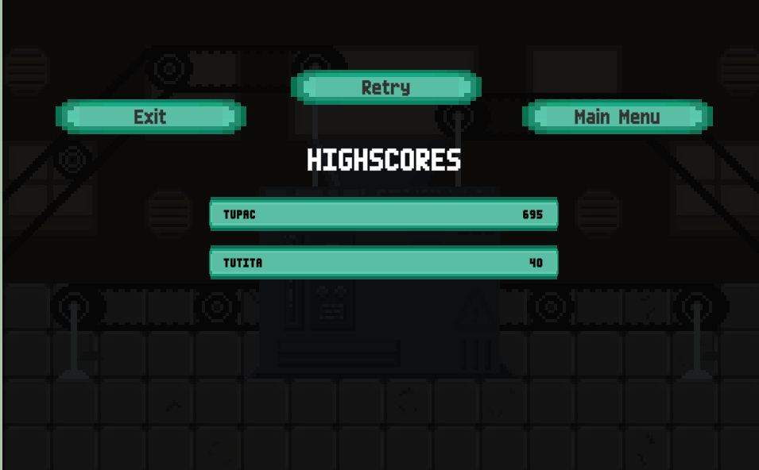

A humorous platformer where an absurd superhero fights pollution using the very thing that creates it, turning a ridiculous premise into a fun and complete gameplay experience.
GasHero was developed during a 3-day Game Jam, where the challenge was to create a complete game around a specific theme within a very limited timeframe.
The game follows an intentionally absurd superhero whose power is... contaminating the environment by farting. Ironically, his mission is to protect nature and fight pollution. Rather than avoiding the absurdity, the team embraced it, creating a lighthearted experience centered around humor and simple yet engaging gameplay.
Gameplay Programmer, UI Programmer
During development, I focused on implementing the player's core mechanics and user interface behavior. My main contributions included:
Rather than trying to justify the game's absurd premise, we decided to fully embrace it. The contrast between a superhero who pollutes while trying to save the environment became the game's defining feature. This allowed us to focus on creating mechanics that supported the joke while still delivering a coherent and enjoyable gameplay experience.
The movement system was intentionally kept simple and responsive so players could immediately engage with the game's core idea without unnecessary complexity.
One of the biggest challenges was adapting the Game Jam theme into a gameplay concept that was both original and achievable within only three days. Balancing creativity with the available development time required constant prioritization, ensuring that every implemented feature contributed directly to the core experience.
Additionally, implementing the Factory Design Pattern within such a short development cycle provided valuable experience applying software engineering principles in a real project.
This project taught me that the first idea is not always the wrong one simply because it sounds absurd. Instead of searching for the "perfect" concept, committing to a simple and fun idea allowed the team to spend more time polishing gameplay and creating a more enjoyable experience.
I also gained practical experience applying object-oriented design principles through the implementation of the Factory Design Pattern in Unity.
One of the most valuable lessons from this project was learning that execution matters more than perfection. A simple idea, developed with focus and confidence, can become a memorable experience when the team commits to making it fun.
Developing the player's movement systems highlighted the importance of testing gameplay responsiveness after every iteration. Even small adjustments to movement speed or dash timing significantly affected the player's experience, reinforcing the value of continuous playtesting and rapid validation during development.



